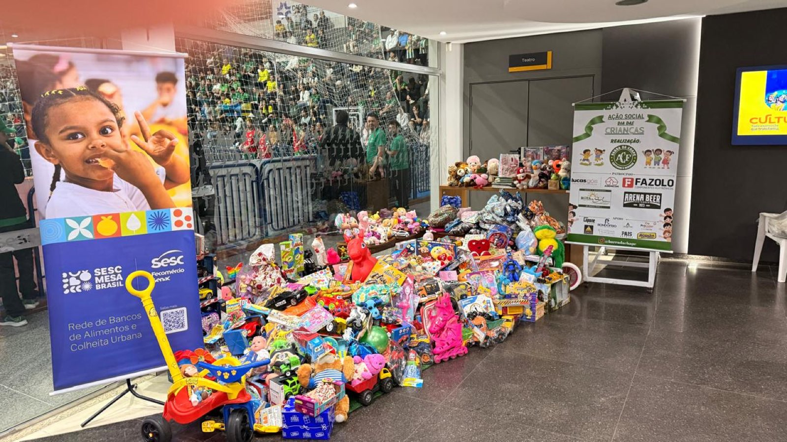
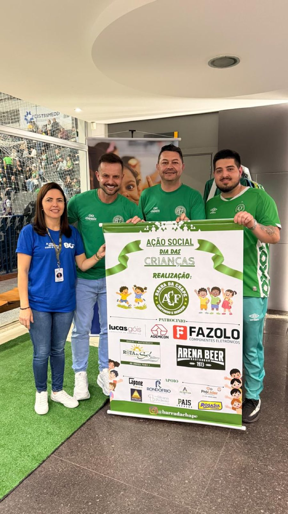

O jogo deste sábado (10) tinha grande importância para a Prefeitura de Chapecó/Chapecoense/Unochapecó. Afinal, estava em disputa uma vaga no G4 do Campeonato Brasileiro de Futsal e, consequentemente, o direito de decidir as quartas de final em casa. O Verdão das Quadras alcançou o objetivo dentro das quatro linhas: venceu o Fazenda (PR) por 5 a 1 no ginásio do SESC e encerrou a primeira fase na terceira colocação. Porém, a importância da partida foi muito além do resultado.
A partir de uma ideia da Barra da Chape, torcida que acompanha e apoia a equipe em todos os momentos, foi promovida uma ação social durante o confronto. A Chapecoense abriu mão da arrecadação da bilheteria e liberou o acesso dos torcedores mediante a doação de um brinquedo. Por intermédio do SESC, diversas associações foram beneficiadas com a iniciativa, alusiva ao Dia das Crianças, comemorado nesta segunda-feira (12). Mais de mil crianças de famílias de baixa renda serão contempladas.

"Agradecemos esse grande público que compareceu mais uma vez no ginásio do SESC. A gente fez um apelo para que todo mundo trouxesse um brinquedo. Foram mais de mil brinquedos, então mais de mil crianças atendidas. Muito obrigado por sempre estarem nos ajudando e fazendo as coisas acontecerem aqui em Chapecó", destacou o presidente da Chape Futsal, Clayton Tressoldi.
20 entidades
Os brinquedos arrecadados serão destinados a 20 entidades. São elas: Asfrec, Acmarc, Amarluz, Asmavi, Asmac, Parque das Palmeiras, Vitório Rosa, São Francisco, Rota da Reciclagem, Sustentare, Vila Betinho, Líder, Esperança, Crescer Feliz, Mão Amiga, Viver, Maria Leite, Verde Vida, Casa de Apoio à Mulher e Criança com Câncer e Casa de Acolhida João Piltz.

Essência do clube
As ações sociais fazem parte do DNA da Chapecoense Futsal. Nos jogos do Brasileiro em casa, os torcedores são convidados a contribuir com um quilo de alimento não perecível, por meio de uma parceria com o SESC. As doações são destinadas ao programa Mesa Brasil.
Ao longo do ano, em partidas realizadas no Ginásio Plínio Arlindo De Nes (SER Aurora), também foram arrecadados agasalhos para a Fundação Aury Luiz Bodanese. Além disso, o clube promove anualmente uma campanha de Natal, com a entrega de alimentos a famílias em situação de vulnerabilidade social em Chapecó.
Fotos: Chape Futsal